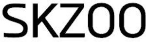

Trade Mark Journal No.2025/031 1 August 2025
WO0000001852733 (18,21)
Office of origin: Republic of Korea
Date of International Registration:16 January 2025
Date of designation in the UK:
16 January 2025

International priority date claimed: 18 July 2024
(Republic of Korea)
(4020240133069)
International priority date claimed: 18 July 2024
(Republic of Korea)
(4020240133077)
- Class 18
- Pouches for holding make-up; toilet bags (sold empty); labels of leather; collars for animals; leads for animals; bags for carrying pets; clothing for pets; skins and hides; leather and imitations of leather; bags; bags for sports; reusable grocery bags; purses; card cases [notecases]; boxes of leather or leatherboard; packaging containers of leather; bags [envelopes, pouches] of leather; leather trimmings for furniture; parasols [sun umbrellas]; umbrellas and their parts; umbrellas; canes; feed bags for animals; harness for horses; leather cord.
- Class 21
- Hair combs; cosmetic utensils; aromatic oil diffusers, other than reed diffusers, electric and non-electric; water flossers; toothbrushes; cleaning tools and washing utensils (other than electric); dustbins for household purposes; ornamental glass spheres; containers for household or kitchen use; kitchen utensils; cooking utensils, non-electric; souvenir plates; lunch pails; drinking steins; mugs; services [dishes], not of precious metal; cups; tumblers for use as drinking glasses; mess-tins; tea cup set; mugs of precious metal; tableware, other than knives, forks and spoons; drinking vessels; containers for foodstuffs; household containers for foods; cookery molds; insulating flasks; buckets; signboards of porcelain or glass; commemorative statuary cups of porcelain, ceramic, earthenware, terra-cotta or glass; covers, not of paper, for flower pots; indoor terrariums for plants; household containers for storing pet food; tissue box covers; coin banks; liquid soap dispensing bottles [for household purposes]; basins not being parts of sanitary installations; boxes for sweets; bottles (except vases); place mats, not of paper or textile; vases; glass ornaments; China ornaments; shoe horns; candelabra [candlesticks]; eyeglass cleaning cloths; mosquito eradicator; electric make-up removing appliances; electric toothbrushes; household gloves for general use; bath brushes; figurines of porcelain, ceramic, earthenware, terra-cotta or glass; nest eggs, artificial.
JYP Entertainment Corporation
Representative: AJU INTERNATIONAL LAW & PATENT GROUP, 7th-14th Floors, Donghee Building 302,, Gangnam-daero, Gangnam-gu, Seoul 06253, REPUBLIC OF KOREA